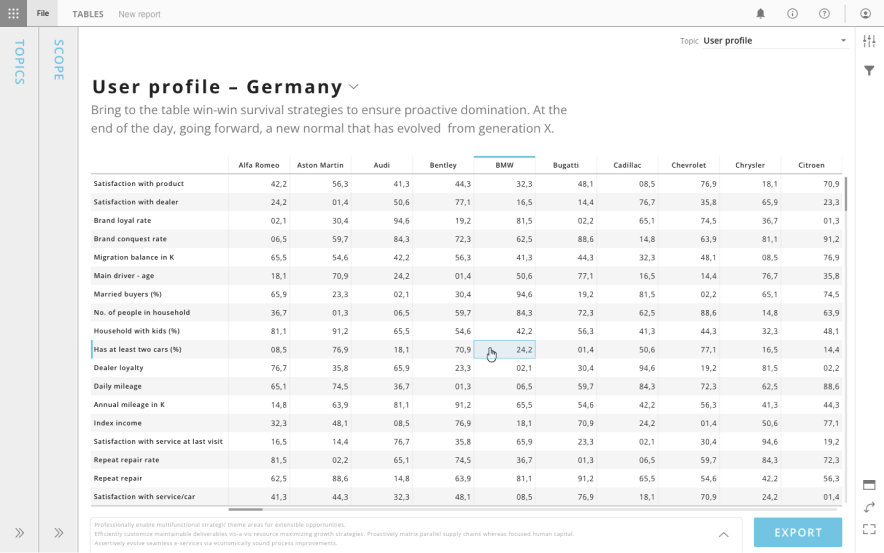
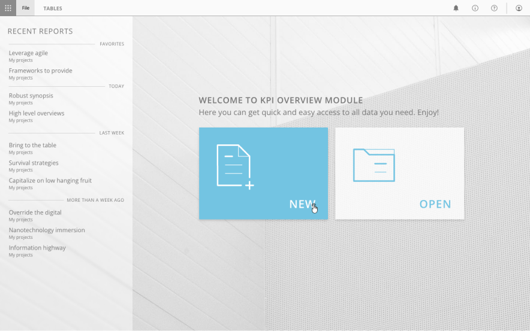
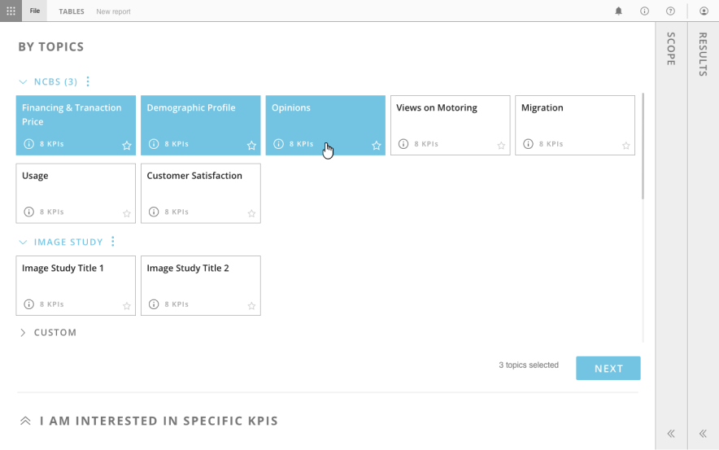
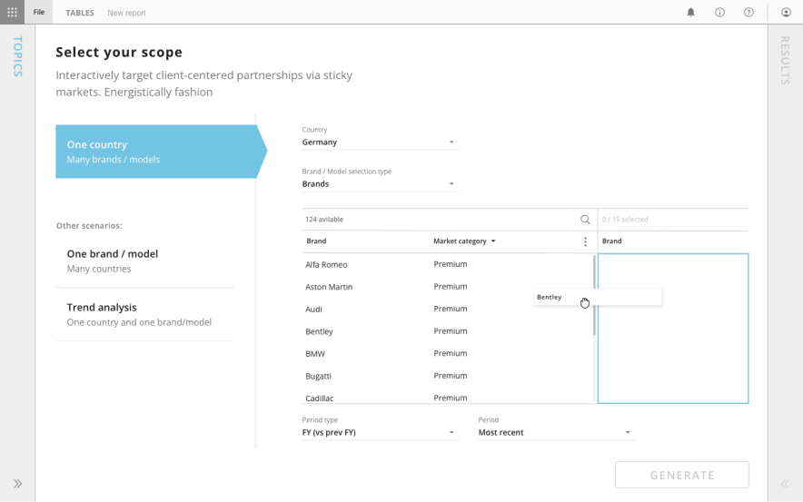
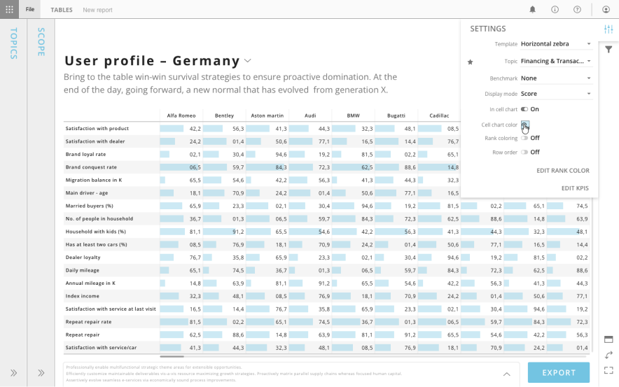
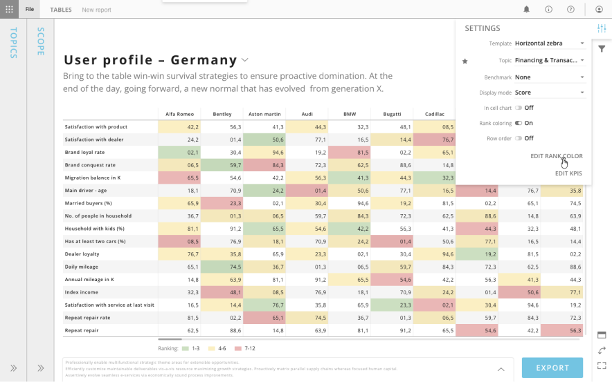

Tables
Tabular reporting for data-driven stakeholders

Overview
Tables is a module within Analyze (now Halo Reports) that gives report consumers a way to browse, interact with, and export raw cross-tabulation data directly inside the Report Viewer — without needing authoring permissions. As Head of Design, I led the concept and design of this module from the ground up.
Challenge
Before Tables, the Viewer could only display designed slide-based reports built in Compose. If a stakeholder needed to see the raw tabular results of an analysis, they had to be given full authoring access — exposing them to unnecessary complexity and the risk of accidental edits. It was a real friction point: users who just needed to browse data were forced into a tool built for analysts. We needed a simple, clean interface that treated tabular data as a first-class reporting format alongside visual slides.
Approach
I designed Tables as a new type of report page that sits alongside slides within the Viewer. Instead of a fixed slide canvas, a table page presents the full, unbounded cross-tabulation results with horizontal and vertical scrolling, clean formatting, titles, and footnotes. The interface needed to feel effortless for consumers while still offering meaningful interactivity — sorting, column freezing, parameter filtering, and Excel export. I worked closely with the team to ensure the experience was consistent with the broader Viewer patterns, so users moved between slides and tables without any friction.
Outcome
Tables filled a critical gap in the reporting workflow. Authors gained a complete toolkit — polished visuals for storytelling in Compose, and raw data access for deep exploration in Tables. Stakeholders could finally browse, filter, and export the data they needed without ever touching the authoring tools.
What’s next
As the capabilities of reports grew we introduced a possibility to early view tables created in Reports an retired tables module.




